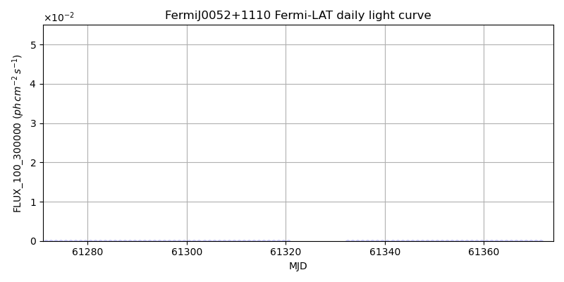

LAT Lightcurve site: https://fermi.gsfc.nasa.gov/ssc/data/access/lat/msl_lc/source/Fermi_J0052p1110
NED: Query
Time of last update of this page: UT: 2026-11-20 16:11 (MJD: 61364.675)
| Property | Value |
|---|---|
| R.A. | 0:52:21.60 |
| Dec. | 11:09:36.0 |
| z | 0.000 |
| 3FGL SpectrumType | |
| 3FGL PL Index | -1.00 |
| 3FGL Flux_100_300000 | -1.00e+00 |
| 3FGL Flux_1000_300000 | -1.00e+00 |
| 3FGL Flux >200 GeV | -1.00e+00 |
| 3FGL Extrap. Crab >200 GeV | -1.00 |
| 3FGL Flux After EBL Absorption >200GeV | -1.00e+00 |
| 3FGL EBL Crab Fraction >200GeV | -1.00 |

| MJD | dMJD | Flux | dFlux | Frac3FGL | FracCrab>200GeV | EBLFracCrab>200GeV |
|---|---|---|---|---|---|---|
| 61359.50 | 0.50 | 8.10e-08 | 0.00e+00 | 0.00 | 0.00 | -0.00 |
| 61360.50 | 0.50 | 1.72e-07 | 0.00e+00 | 0.00 | 0.00 | -0.00 |
| 61361.50 | 0.50 | 1.36e-07 | 0.00e+00 | 0.00 | 0.00 | -0.00 |
| 61362.50 | 0.50 | 1.37e-07 | 0.00e+00 | 0.00 | 0.00 | -0.00 |
| 61363.50 | 0.50 | 6.71e-07 | 0.00e+00 | 0.00 | 0.00 | -0.00 |
| MJD | dMJD | Flux | dFlux | Frac3FGL | FracCrab>200GeV | EBLFracCrab>200GeV |
|---|---|---|---|---|---|---|
| 61321.50 | 3.50 | 1.13e-07 | 0.00e+00 | 0.00 | 0.00 | -0.00 |
| 61335.50 | 3.50 | 8.17e-08 | 0.00e+00 | 0.00 | 0.00 | -0.00 |
| 61342.50 | 3.50 | 6.68e-08 | 0.00e+00 | 0.00 | 0.00 | -0.00 |
| 61349.50 | 3.50 | 9.46e-08 | 0.00e+00 | 0.00 | 0.00 | -0.00 |
| 61356.50 | 3.50 | 2.28e-08 | 0.00e+00 | 0.00 | 0.00 | -0.00 |

| MJD | dMJD | Flux | dFlux | Frac3FGL | FracCrab>200GeV | EBLFracCrab>200GeV |
|---|---|---|---|---|---|---|
| 61359.50 | 0.50 | 1.91e-08 | 0.00e+00 | 0.00 | 0.00 | -0.00 |
| 61360.50 | 0.50 | 5.52e-08 | 0.00e+00 | 0.00 | 0.00 | -0.00 |
| 61361.50 | 0.50 | 1.97e-08 | 0.00e+00 | 0.00 | 0.00 | -0.00 |
| 61362.50 | 0.50 | 1.52e-08 | 0.00e+00 | 0.00 | 0.00 | -0.00 |
| 61363.50 | 0.50 | 2.53e-08 | 0.00e+00 | 0.00 | 0.00 | -0.00 |

| MJD | dMJD | Flux | dFlux | Frac3FGL | FracCrab>200GeV | EBLFracCrab>200GeV |
|---|---|---|---|---|---|---|
| 61321.50 | 3.50 | 3.41e-08 | 0.00e+00 | 0.00 | 0.00 | -0.00 |
| 61335.50 | 3.50 | 2.94e-09 | 0.00e+00 | 0.00 | 0.00 | -0.00 |
| 61342.50 | 3.50 | 2.70e-09 | 0.00e+00 | 0.00 | 0.00 | -0.00 |
| 61349.50 | 3.50 | 2.41e-09 | 0.00e+00 | 0.00 | 0.00 | -0.00 |
| 61356.50 | 3.50 | 3.24e-09 | 0.00e+00 | 0.00 | 0.00 | -0.00 |
--------------------------------------------------------- Using user-supplied coords: 0:52:21.60 11:09:36.0 2000 --------------------------------------------------------- FLWO UT night of: 2026-11-21 Local Sid. @ Midnight: 03:37 Sunset (-15.0) (local, UT): 18:33 01:33 Sunrise (-15.0) (local, UT): 05:47 12:47 Moonrise (local, UT): Moonset (local, UT): 03:40 10:40 Moon phase: 0.85 --------------------------------------------------------- AzTime LSID UT Obj_el Obj_az Mn_el Mn_az Sep. --------------------------------------------------------- 18:33 22:09 01:33 47.0 108.9 47.9 117.4 5.8 19:03 22:39 02:03 52.9 115.7 53.3 125.0 5.6 19:33 23:09 02:33 58.5 124.4 58.2 134.7 5.4 20:03 23:39 03:03 63.4 135.7 62.3 146.9 5.2 20:33 00:09 03:33 67.2 150.9 65.1 162.1 5.0 21:03 00:39 04:03 69.4 170.0 66.3 179.7 4.8 21:33 01:09 04:33 69.3 191.0 65.4 197.5 4.6 22:03 01:39 05:03 67.1 210.0 62.9 213.2 4.4 22:33 02:09 05:33 63.1 224.9 59.0 225.9 4.2 23:03 02:39 06:03 58.2 236.1 54.2 235.9 4.0 23:33 03:09 06:33 52.6 244.7 48.9 243.9 3.8 00:03 03:39 07:03 46.7 251.4 43.2 250.4 3.6 00:33 04:10 07:33 40.5 257.0 37.3 255.9 3.4 01:03 04:40 08:03 34.3 261.9 31.2 260.7 3.2 01:33 05:10 08:33 27.9 266.2 25.1 265.1 3.0 02:03 05:40 09:03 21.5 270.3 19.0 269.2 2.7 02:33 06:10 09:33 15.1 274.2 12.9 273.0 2.5 03:03 06:40 10:03 8.8 278.0 6.8 276.9 2.3 03:33 07:10 10:33 2.7 281.8 1.0 280.7 2.1 04:03 07:40 11:03 -2.4 285.8 -4.9 284.7 1.9 04:33 08:10 11:33 -9.9 290.0 -11.1 288.8 1.7 05:03 08:40 12:03 -15.8 294.5 -16.8 293.2 1.5 05:33 09:10 12:33 -21.5 299.4 -22.3 298.1 1.4 05:47 09:25 12:47 -24.2 302.0 -24.8 300.5 1.4 --------------------------------------------------------- Dark hours >55 deg.: 0.00